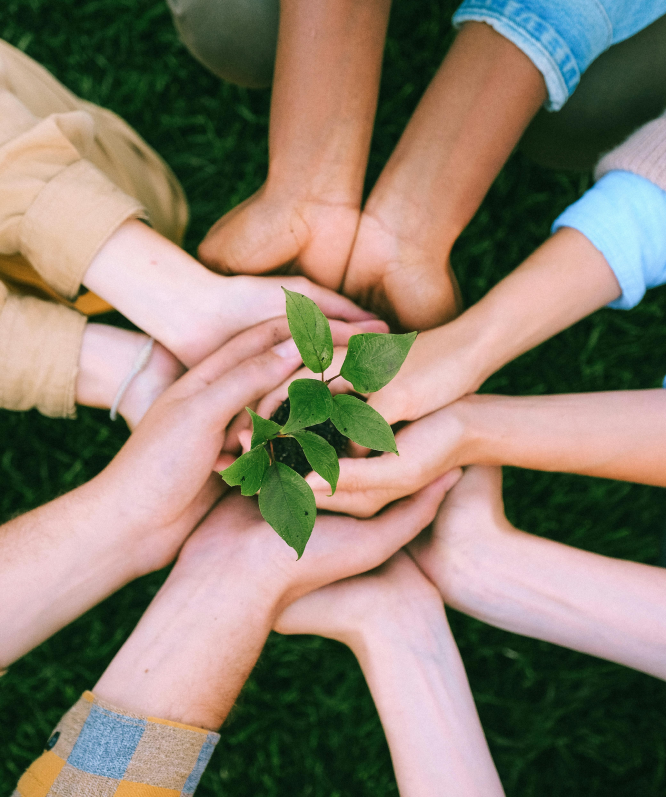

Get your subscription box here! We know times can get hard and we are here to support you. Check our special offers here.
Children should learn to cope with hard feelings too. That is why we have created a kit for them, to teach them the basics about gardening and mental health.
If you recently retired and you are looking for something to cope with all these new feelings, this package is for you. Specially for together with accessibility features for our senior audience.
Coping with PTSD after an incident can be hard. We want to support you all the time. If you are struggling, reach our Support Line 24/7 at +1 0 800 123 456
At Seed the Hope, we use therapeutic gardening to help victims of violence heal and rebuild. Your donation—whether from a business or as an individual—helps us expand our programs, providing tools and safe spaces for more survivors to find strength and hope. Together, we can grow resilience and transform lives.
Donate 